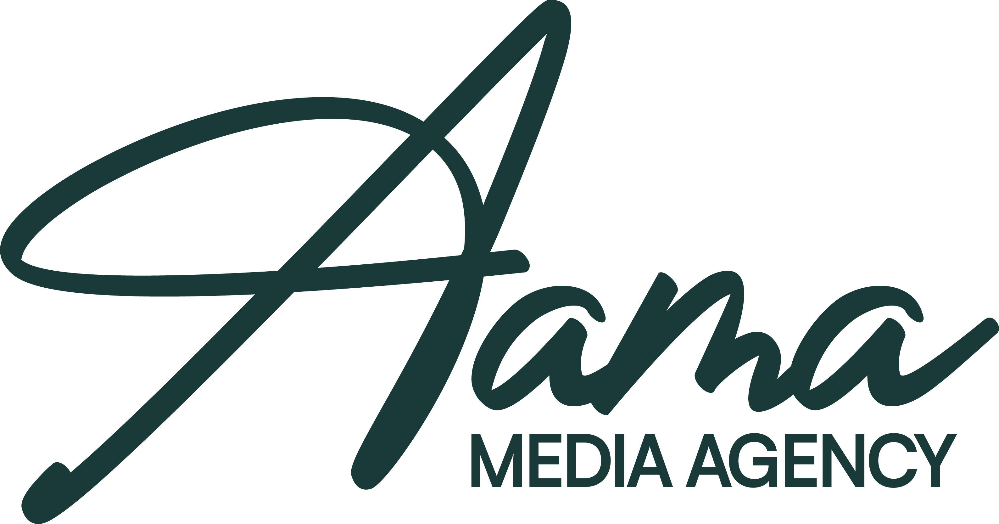

ශ්රී ලංකාවේ පොදු ගැටලු, ලේඛන ඇසුරින් විමසා බලා ඇත. සෑම සංඛ්යාලේඛනයක්ම එය උපුටා ගත් පිටුවට සම්බන්ධ කර ඇත. මූලාශ්ර පරස්පර වන තැන්වලදී දෙපාර්ශ්වයේම තොරතුරු ඔබට දැකගත හැකිය.
සෑම ප්රකාශයක්ම ඒ පිටුපස ඇති මූලාශ්රයේ වර්ගය අනුව සලකුණු කර ඇත.